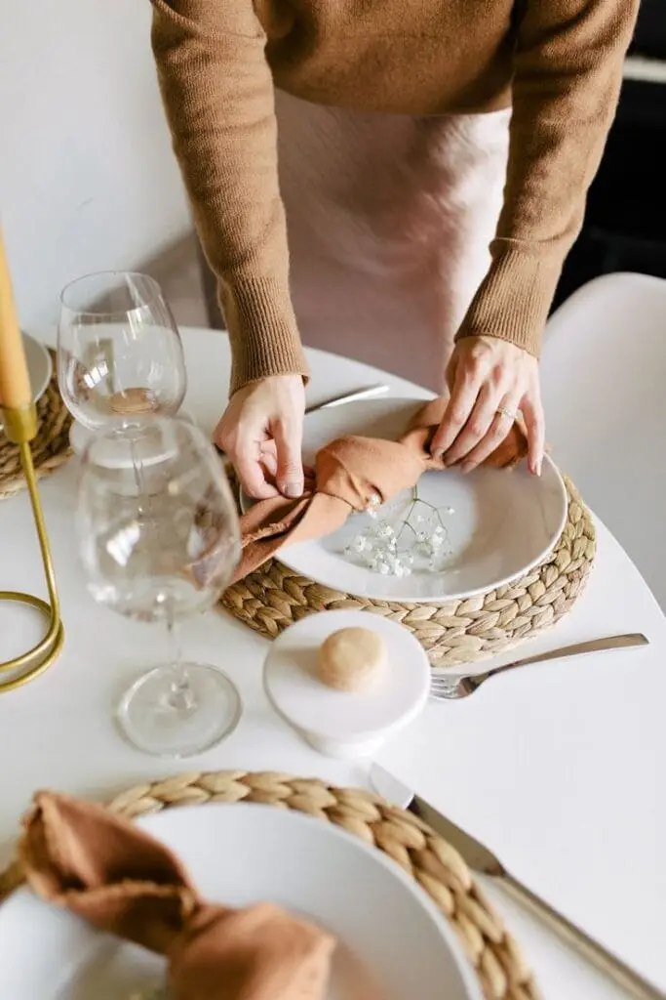
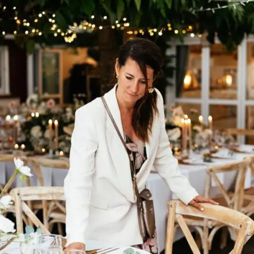
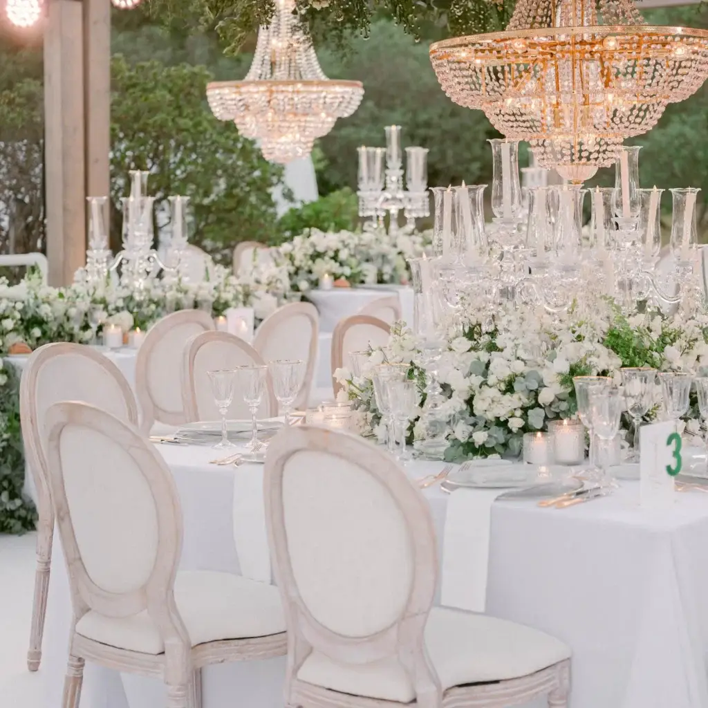
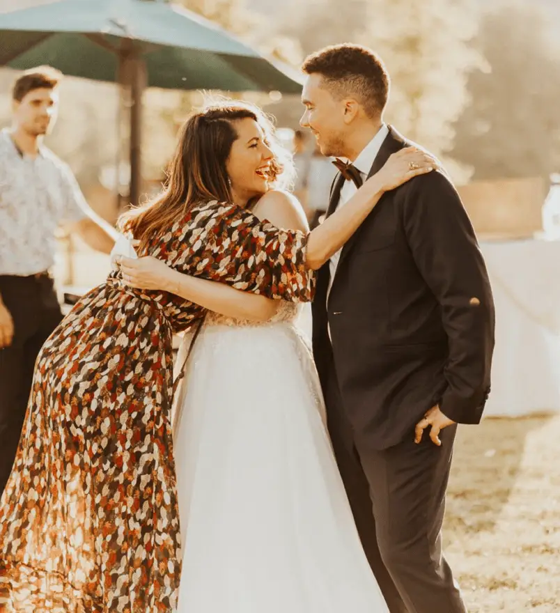
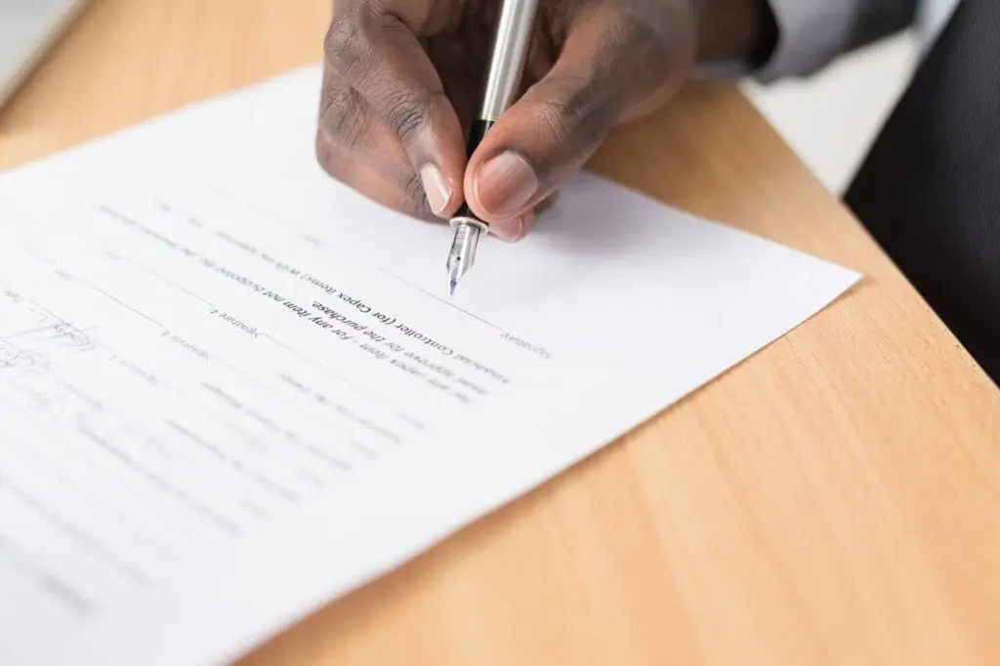

Ah, les mariages ! Ce moment où l’amour et la logistique se rencontrent dans une explosion de confettis et de fleurs… Si vous êtes en train de planifier votre grand jour et que l’idée de tout gérer de A à Z vous cause une bonne dose de stress, ne paniquez pas ! Un wedding planner de confiance peut être votre précieux soutien pour une journée magique sans stress. Dans cet article vous trouverez tout les conseils pour dénicher le professionnel de confiance capable de transformer votre rêve de mariage en réalité… et vous épargner toute l’organisation.

Identifiez vos besoins
Avant de vous lancer à la recherche du wedding planner idéal, respirez profondément et prenez un instant pour réfléchir. Posez-vous la question : avez-vous besoin d’un accompagnement total, ou juste d’un petit coup de main pour l’organisation des activités le jour J et éviter de courir partout avec un bouquet entre les mains ? Vous avez probablement déjà une vision claire de ce que vous souhaitez, mais un petit brainstorming à deux peut parfois changer la donne. Cette considération impactera directement vos choix et, bien sûr, votre budget.

Sélectionnez vos agences favorites

À la recherche de la perle rare ? Alors, mettez votre casquette de détective et commencez par les sources classiques : consultez les blogs de mariage, parcourez les réseaux sociaux (hello Instagram et Pinterest !), sollicitez l’avis de vos amis ou de prestataires fiables (parce qu’on sait tous qu’un bon plan se transmet de bouche à oreille). Soyez sélectif dans vos recherches : il faut choisir un wedding planner de confiance qui correspond à vos goûts et préférences. Vous rêvez d’un mariage respectueux de l’environnement avec des guirlandes en bambou? D’une cérémonie à l’étranger où tout est plus romantique et où le soleil brille plus que votre futur mari ? Ou bien vous voulez dire « oui » dans une langue qui vous tient à cœur ? En approfondissant vos recherches, vous trouverez sûrement l’agence capable de satisfaire toutes vos attentes. Qui sait, le wedding planner idéal pourrait aussi avoir un don secret pour dénicher les meilleures pâtisseries de la région… Parce qu’après tout, un mariage sans gâteau digne de ce nom… c’est vraiment un mariage ?
Examinez le portfolio !
L’expérience d’un wedding planner est primordiale, tout comme sa manière de travailler. C’est un peu comme un premier rendez-vous : vous devez savoir si ça va matcher ! Alors, avant de vous engager dans cette aventure avec beaucoup de décisions à prendre, jetez un œil à son portfolio. Est-ce que ses photos vous donnent envie de vous marier sur-le-champ ou vous donnent plutôt envie de fuir en courant ? Si vous êtes fan de mariages minimalistes, mais que son portfolio est rempli de décors surchargés et de paillettes. Il serait alors peut-être judicieux de reconsidérer votre choix et d’opter pour un autre match. Cependant, si chaque page vous fait dire « Waouh, c’est exactement ce que je veux ! », que vous découvrez pleins d’inspirations, alors vous avez sûrement trouvé LE wedding planner idéal !
Pourquoi faire appel à un organisateur de mariage pour son grand jour ?
Alors, pourquoi engager un wedding planner, vous demandez-vous ? Eh bien, laissez-moi vous expliquer !
Un wedding planner se charge de tous les détails qui peuvent faire tourner la tête tels un super-héros de l’organisation : budget, prestataires, lieux, non, ce n’est pas un rêve, c’est la réalité !
Parce que vous méritez de vous focaliser sur votre futur mari !
Il ou elle connaît de nombreux prestataires, les meilleurs lieux de réception, et bien sûr, les dernières tendances (parce que soyons honnêtes, vous n’avez pas le temps de suivre toutes les tendances de mariage, entre la recherche du voile idéal et le choix du DJ).
Enfin, le stress… ce vilain monstre qui rôde autour de chaque mariage. Pourquoi céder à l’angoisse de « mes invités vont-ils se perdre ? » ou « le traiteur arrivera-t-il à temps ? » quand un wedding planner de confiance est là pour gérer tout cela ! Vous pourrez enfin dormir sur vos deux oreilles, pendant qu’il ou elle s’occupe de tout.
Donc, si vous êtes déjà submergés par les préparatifs ou si vous n’avez tout simplement pas le temps, peut-être qu’il est temps de confier l’organisation de votre mariage à quelqu’un qui a le super-pouvoir de rendre tout cela plus facile.
Prenez en compte les avis
Les commentaires des clients précédents, c’est un peu comme les étoiles d’un restaurant : mieux vaut en avoir plusieurs pour éviter de tomber sur un wedding planner qui n’a jamais vu un bouquet de fleurs de près !
Les témoignages, c’est donc un must. Ils sont essentiels pour savoir si les anciens mariés se sont sentis comme des rois et des reines le jour J, leur expérience s’est bien passée. Si leurs retours sont remplis de compliments, que les éloges sont dignes d’un Oscar, c’est sûrement bon signe !


La rencontre
Une rencontre en face à face ( ou par visioconférence si vous êtes extrêmement occupé ) est indispensable. En effet, vous devez vous sentir à l’aise avec lui/elle. Après tout, vous allez lui confier l’un des jours les plus importants de votre vie, quand même ! La première impression est souvent la bonne, suivez votre intuition ! Le feeling passe bien ? Vous sentez que cette personne est faite pour s’occuper de l’organisation de votre mariage ? Vous avez l’impression d’avoir trouvé votre nouvelle BFF après 5 minutes, foncez, vous êtes sur la bonne voie !
Au contraire, vous doutez et ne ressentez pas de lien… Choisissez quelqu’un d’autre !
C’est tout à fait normal de vouloir vérifier que la communication et la complicité seront présentes. Parce qu’une fois le contrat signé, vous allez passer des mois ensemble à discuter du moindre petit détail : des invitations aux fleurs en passant par le gâteau.
Et l’aspect financier dans tout ça ?
C’est le moment de parler chiffres, et pas question de jouer à cache-cache !
Soyez super clair avec votre wedding planner, et assurez-vous que les coûts sont transparents. Oui, je parle bien de toutes les petites dépenses, pas de surprises à la facture, comme : « Ah, vous pensiez que les fleurs coûtaient 500 €, mais en fait, c’est 3000 € »… Surprise !
TOUT doit être clair, du début à la fin. Vous ne voulez pas découvrir à la dernière minute qu’il faut trouver de l’argent pour financer la déco, n’est-ce pas ? Alors, choisissez un wedding planner en qui vous avez confiance et posez lui toutes les questions nécessaires !
Qu’est-ce qui est inclus dans le devis ? Quelles sont les frais supplémentaires ? Quelles sont les conditions d’annulation ? Est-ce que la décoration peut être jolie sans qu’on vende notre appartement pour ça ?
Le wedding planner idéal, c’est celui qui vous dit clairement : « Voilà où va chaque euro, et voilà comment on va faire pour respecter votre budget ».
Votre contrat, un mariage ou un film d’action avec des rebondissements imprévus ?
Le contrat sert en quelque sorte de boussole pour votre collaboration avec votre organisateur de mariage. Si vous ne voulez pas vous retrouver dans un champ de confettis sans savoir où aller, prenez le temps de le lire attentivement ! Vérifiez les services inclus, les modalités d’annulation, etc… Posez toutes vos questions si vous avez un doute sur quoi que ce soit !
Ce n’est pas le moment de sauter des étapes, alors assurez-vous que tout est clairement écrit. Parce que votre mariage, c’est l’un des plus grands projets de votre vie ! Pas de place pour l’improvisation !

Avis
Dès notre 1 ère rencontre nous avons eu la certitude d’avoir trouvé la Perle rare, la Marry Poppins de l’amour ! Un an de préparatif encadré par ses soins, son écoute à toute épreuve, ses conseils avisés, sa bienveillance, son humour, ses astuces incroyables, son savoir-faire incomparable et j’en passe…Alexandra c’est tout ça, c’est la meilleure amie dont on a besoin quand on s’apprête à vivre le plus beau jour de sa vie. Et quand ce jour arrive, elle est bien là, entourée des meilleurs.
L'organisation
Tout d’abord, l’organisation commence par notre premier rendez-vous, où je prends le temps de vous connaître davantage, comprendre vos attentes et tout savoir sur vous. Ensuite, nous établissons ensemble le cahier des charges et les plannings, vous tenant informé de chaque étape. La recherche du lieu idéal suit : vignobles bordelais, châteaux médocains, villa privée avec vue sur l’eau … Nous choisissons ensemble votre lieu idéal.
La production
En second lieu, vient la phase de production, où je m’occupe des choix, des essais, et de la rédaction des contrats avec les divers prestataires nécessaires à la création d’un mariage inoubliable. Du traiteur au DJ, du photographe au vidéaste, du fleuriste à l’officiant, en passant par la mise en beauté, chaque détail est soigneusement recherché avec vous pour sélectionner les meilleurs prestataires pour votre mariage.
Le design
Dans un troisième temps, le design prend forme. Après une discussion approfondie pour connaître vos goûts et le style que vous souhaitez (chic, épuré, champêtre, coloré…), je crée un moodboard afin de concevoir la scénographie de votre mariage et ainsi créer votre décoration de mariage de A à Z.
Le Jour J
Enfin, le jour J, je suis présente pour coordonner et superviser d’une main de maître votre mariage, de la cérémonie à la soirée dansante, afin de vous permettre de profiter pleinement de cette journée mémorable.
En bref...
En suivant ces étapes, vous serez prêt(e) pour la recherche et le choix de votre wedding planner idéal. Un organisateur de mariage, transformera à coup sûr l’organisation de votre mariage en un moment fun .
Alors, prêt(e) à faire confiance à un/une wedding planner pour vous permettre de gagner du temps et avoir un accompagnement de qualité ?
Lovely Day Event c'est plusieurs types de prestations
L'organisation de mariage
Je vais intervenir sur toutes les étapes de vos préparatifs et vous guider dans vos choix. Je suis force de proposition pour que votre mariage ne ressemble qu’à vous.
Décoration de mariage
Créative et passionnée, je suis certifiée Wedding Designer et je conçois une ambiance scénographique qui correspond au thème de votre mariage.
Coordination le jour J
Je serai le chef d’orchestre pour gérer les différents prestataires, la mise en place de votre décoration et le déroulement de cette belle journée.